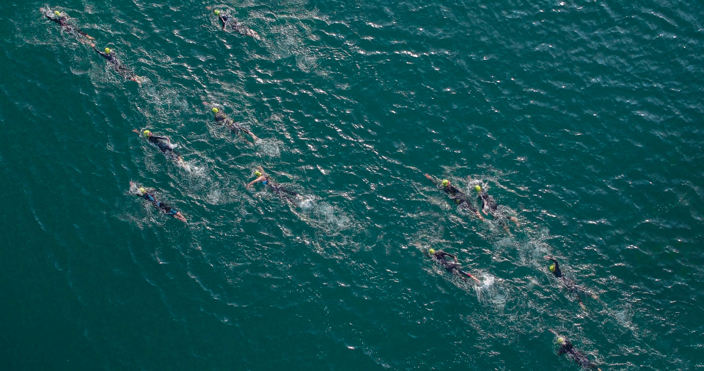

Crawl
Focus op snelheid en efficiëntie.

Voormalig Belgisch international vrije slag. Vandaag help ik triatleten en open-waterzwemmers om het eerste deel van de race om te toveren van een overlevingsoefening, naar een echt wapen.
ScrollGeboren in Gent in 1991, opgegroeid bij MEGA onder coach Herman Verbauwen. Mijn carrière draaide rond de 200m en 400m vrije slag. Seniordebuut op het WK 2009 in Rome, finalist op het EK 2010 in Boedapest (4×200 vrij), en in 2012 zette ik een punt achter mijn competitiecarrière.
Vandaag coach ik de mensen die de zwemproef als hun grootste uitdaging zien. Age-groupers, beginners, sub-elite triatleten. Ik breng meer dan twintig jaar zwemambacht naar een discipline die de meeste triatleten nooit grondig leren. Eerlijke feedback, duidelijke structuur, geen blabla.
Focus op snelheid en efficiëntie.
Focus op vertrouwen en rust vinden in het water.
Focus op absolute perfectionering, data en geavanceerde techniekverbetering.
Focus op onvoorspelbare omstandigheden.

"Zes weken met Axel en mijn zwemtechniek is onherkenbaar veranderd. Van 2:10/100m naar 1:40."

"Geen vage aanwijzingen maar concrete oefeningen die écht werken in open water."

"Van paniek in de meute naar rust en controle. Axel kent het vak als geen ander."

"De video-analyse was een oogopener. 15 seconden sneller per 100m op 3 maanden tijd."